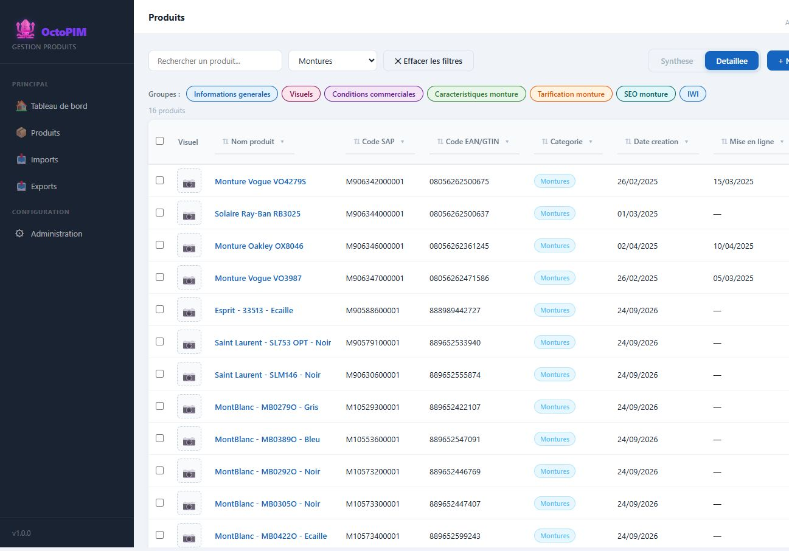

Liste des produits
Ecran de travail quotidien : retrouver, trier, filtrer, ouvrir une fiche ou creer un produit.
Qu’est-ce que la liste ?
Un tableau du catalogue accessible a l’utilisateur (selon ses categories). Deux presentations : Synthese (colonnes configurees en admin) et Detaillee (colonnes des groupes visibles, filtrables par onglet).

A quoi sert-elle ?
- Piloter le catalogue (recherche, categorie, tri, filtres de colonnes).
- Entrer dans une fiche (clic sur le nom ou une colonne « ouvrir »).
- Creer un produit (EAN, nom, categorie obligatoires ; SAP facultatif).
- Preparer un export (le perimetre filtre est repris).
Comment ça marche
| Action | Comportement |
|---|---|
| Retrouver un produit | Besoin : identifier une reference parmi un catalogue qui visera plus de 100 000 produits, avec la meme facilite que les filtres par colonne d’Excel. La maquette propose une recherche globale et des filtres de colonne. A challenger : afficher toutes les valeurs distinctes d’une colonne ne tiendra pas a ce volume. |
| Filtre categorie | Restreint a une famille. Le tri/filtre colonne Categorie reste possible en synthese. |
| Vue synthese | Colonnes definies dans Administration > Vue de synthese (visuel, nom, SAP, EAN, categorie, dates, completion…). |
| Vue detaillee | Colonnes des groupes de la categorie filtree. Sans categorie choisie, la barre de groupes est masquee. |
| Completion | Jauge a gauche du nom. Seuil parametrable (defaut 80 %). |
| Nouveau produit | Modale : EAN, nom, categorie obligatoires. Redirige vers la fiche. |
| Tri | Clic sur l’en-tete d’une colonne, croissant puis decroissant. |
| Pagination | Preference d’application. Defaut 50 lignes. 0 affiche toute la liste. Plafond de saisie 500. Cible a 100 000 produits, la page ne charge pas tout le catalogue d’un coup. |
| Selection | Cases a cocher. Comparer demande au moins deux produits et une categorie (vue detaillee, ecarts en jaune). Modifier en masse ecrit la meme valeur sur la selection, seulement la ou l’utilisateur a le droit d’ecrire. Supprimer en masse demande confirmation et ignore les produits sans droit de suppression. |
| Groupes | En vue detaillee, une fois une categorie choisie, seuls les groupes de cette categorie apparaissent. On masque un groupe pour retirer ses colonnes. Sans categorie, pas de barre de groupes. |
En detail
La liste est l’ecran ou l’on retrouve un produit, comme dans l’Excel qu’OctoPIM remplace. Elle ne montre que les produits des categories en lecture. Un produit hors droit n’apparait ni ici, ni au dashboard, ni a l’export.
Deux presentations
- Synthese : colonnes choisies dans Administration, Vue de synthese. Identiques pour tous les roles. Les droits filtrent les lignes, pas les colonnes. Une colonne marquee « clic pour ouvrir » ouvre la fiche. Le nom le fait deja.
- Detaillee : une categorie est obligatoire. La barre n’affiche que les groupes de cette categorie, dans l’ordre regle sur la categorie. Sans categorie choisie, la barre est masquee. Masquer un groupe retire ses colonnes. Un champ masque par une condition ou reserve a une autre categorie n’est pas une colonne.
Retrouver, agir
- La recherche et les filtres de colonnes reduisent le tableau. Le filtre de colonne enumere les valeurs deja affichees. A 100 000 produits, cette enumeration ne tient pas : la cible est une recherche par saisie, pas une liste de toutes les valeurs.
- Le tri se fait en cliquant l’en-tete, croissant puis decroissant.
- La pagination est une preference d’application : defaut 50 lignes, 0 affiche tout, plafond de saisie 500. A 100 000 produits, la page ne charge pas le catalogue entier.
- Nouveau produit n’apparait que si l’utilisateur peut ecrire au moins une categorie. La modale demande l’EAN, le nom et la categorie. Le code SAP peut rester vide. La fiche s’ouvre ensuite.
- La selection permet de comparer (au moins deux produits, une categorie, ecarts en jaune en vue detaillee), de modifier en masse (la meme valeur, seulement la ou le droit d’ecriture existe) ou de supprimer en masse (confirmation, les produits sans droit de suppression sont ignores).
- La jauge de completion ne compte que les champs saisissables : hors systeme, calcules, visuels et commentaire.
- Un produit qui declenche une alerte porte un picto sur son nom. Le filtre venu du dashboard ne garde que ces produits, et le libelle de l’alerte reste visible tant que le filtre est actif.
Regles
RG-LST-01 — L’utilisateur ne voit que les produits des categories en lecture.
RG-LST-02 — Le bouton Nouveau produit n’apparait que s’il a au moins une categorie en ecriture.
RG-LST-03 — La jauge de completion ne compte que les champs saisissables (hors systeme, calcules, visuels, commentaire).
RG-LST-04 — La vue detaillee demande une categorie. Elle n’affiche que les groupes de cette categorie, dans l’ordre defini sur la categorie. Sans categorie, la barre n’apparait pas.
RG-LST-05 — Une modification ou une suppression de masse ne touche que les produits sur lesquels le droit correspondant existe.
RG-LST-06 — Maquette Le filtre de colonne enumere les valeurs visibles. Cible A 100 000 produits, retrouver une reference se fait par saisie, pas par une liste de toutes les valeurs.
RG-LST-07 — Un produit qui declenche une alerte porte un picto sur son nom. Le filtre venu du tableau de bord ne garde que ces produits, et le libelle de l’alerte reste visible tant que le filtre est actif.
RG-LST-02 — Le bouton Nouveau produit n’apparait que s’il a au moins une categorie en ecriture.
RG-LST-03 — La jauge de completion ne compte que les champs saisissables (hors systeme, calcules, visuels, commentaire).
RG-LST-04 — La vue detaillee demande une categorie. Elle n’affiche que les groupes de cette categorie, dans l’ordre defini sur la categorie. Sans categorie, la barre n’apparait pas.
RG-LST-05 — Une modification ou une suppression de masse ne touche que les produits sur lesquels le droit correspondant existe.
RG-LST-06 — Maquette Le filtre de colonne enumere les valeurs visibles. Cible A 100 000 produits, retrouver une reference se fait par saisie, pas par une liste de toutes les valeurs.
RG-LST-07 — Un produit qui declenche une alerte porte un picto sur son nom. Le filtre venu du tableau de bord ne garde que ces produits, et le libelle de l’alerte reste visible tant que le filtre est actif.